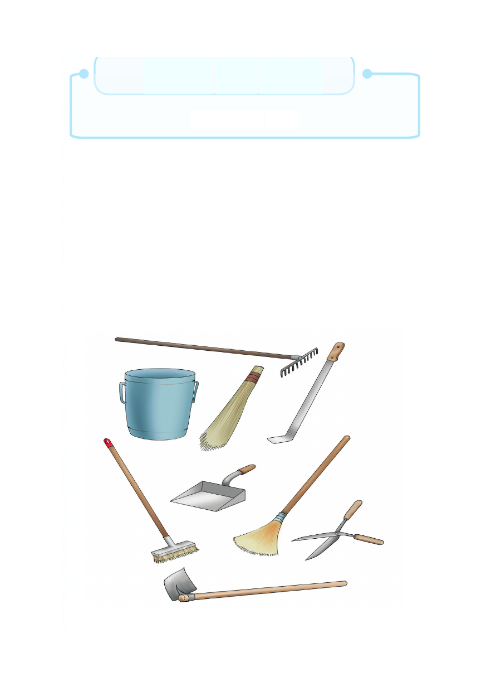

Sura ya Nne
Mazingira yetu
Utangulizi
Katika sura hii utajifunza kuhusu mazingira, ambapo utaweza
kubaini vifaa vinavyotumika katika kusafisha mazingira. Vilevile
utajifunza namna ya kupanda miche kwa kuzingatia kanuni na
kuitunza. Pia, utabaini vitendo hatarishi katika mazingira na
viumbe hatarishi. Mwisho, utajifunza alama za tahadhari na
matumizi yake.
Vifaa vya kutunzia mazingira
Mazingira husafishwa kwa kutumia vifaa mbalimbali.
Vifaa vya kusafishia mazingira
Sura ya Nne Mazingira yetu Utangulizi Katika sura hii utajifunza kuhusu mazingira, ambapo utaweza kubaini vifaa vinavyotumika katika kusafisha mazingira. Vilevile utajifunza namna ya kupanda miche kwa kuzingatia kanuni na kuitunza. Pia, utabaini vitendo hatarishi katika mazingira na viumbe hatarishi. Mwisho, utajifunza alama za tahadhari na matumizi yake. Vifaa vya kutunzia mazingira Mazingira husafishwa kwa kutumia vifaa mbalimbali. Vifaa vya kusafishia mazingira